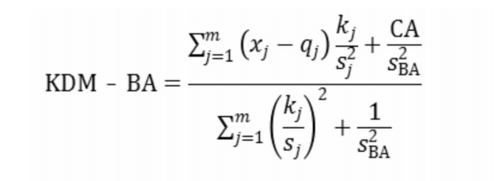

本平台以 Klemera 与 Doubal 提出的 KDM-BA 理论框架为核心基础，并借鉴了刘足云教授团队专为中国人群开发的 KDM-BA 模型 —— 该模型依托 12 种临床常规标志物构建。该12项临床常规标志物模型包含12项临床常规标志物，涵盖五大生理系统：
1）免疫功能（超敏C反应蛋白、红细胞计数、血小板计数）
2）心脏代谢（总胆固醇、甘油三酯、糖化血红蛋白、收缩压）
3） 肝功能（白蛋白）
4） 肾功能（尿素、肌酐）
5）铁代谢（铁蛋白、转铁蛋白）
通过对这12项标志物进行系统性数学组合分析，基于每种组合构建KDM-BA，从中筛选性能优良的组合，以确保在部分标志物缺失的条件下，仍能有效开展衰老量化研究。（具体方法见参考文献[1]）。
该项目由郑州大学公共卫生学院王威教授和浙江大学公共卫生学院刘足云教授合作完成。

[1] 李梦涵,高晨阳,秦琅,等.基于多种临床常规标志物的中国人群生物学年龄模型的构建[J].郑州大学学报(医学版), 2024, 59(06): 8
[2] 吴维超, 郭燕, 赵祥凯, 等. 职业酸雾暴露与作业工人生物衰老加速的关联性分析[J]. 吉林大学学报(医学版), 2024, 50(06): 1741 https://link.cnki.net/doi/10.13481/j.1671-587X.20240629
[3] 高晨阳,李梦涵,谷志广,等.生物学年龄研究进展[J]郑州大学学报(医学版),2025.60(4):445
[4] 段晓冉, 葛亚豪, 魏雨婕,等. 衰老的表现、原因及预防[J]. 郑州大学学报(医学版), 2024, 59(06): 741 https://link.cnki.net/doi/10.13705/j.issn.1671-6825.2024.10.070
[5] LU ZY. Development and validation of 2 composite aging measures using routine clinical biomarkers in the Chinese population :analyses from 2 prospective cohort studies[j]. J Gerontol A Biol Sci Med Sci,202l,76(9):1627 https://doi.org/10.1093/gerona/glaa238
[6] KLEMERA P, DOUBAL S. A new approach to the concept and computation of biological age[J]. Mech Ageing Dev, 2006, 127(3): 240 https://doi.org/10.1016/j.mad.2005.10.004
[7] GA0 X,CENG T,JANG MJ, et al. Accelerated biological aging and risk of depression and anxiety : evidence from 424,299 UK Biobank participants[j]. Nat Commun ,2023.14(1):2277 https://doi.org/10.1038/s41467-023-38013-7